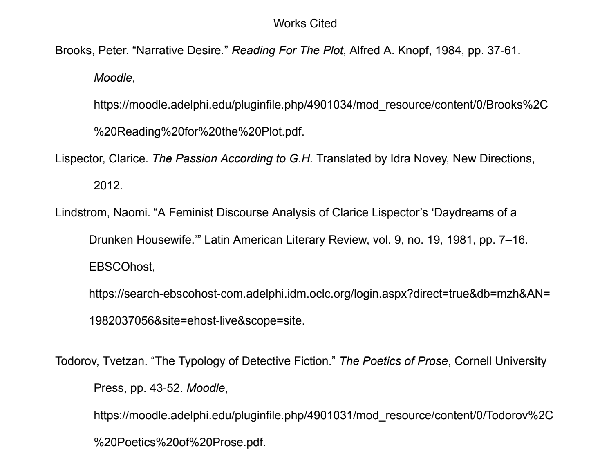

Clarice Lispector is an author whose work has drawn a considerable amount of critical inquiry surrounding her exploration of the apparent impossibility of translating one’s experienced reality into narrative terms. Lispector’s work regularly attempts to recover and mourn that which has been lost in the process of translation from thought to word, perception to narration, and from experience to expression. Other investigations have taken up a lens to look at Lispector’s work characterizing her use of language as a failed attempt to translate the experience of womanhood into a mode of language otherwise characterized by a masculine relationship to self-definition.While giving due recognition to the feminist tradition that has shaped this inquiry into Lispector’s work, I want to use Lispector’s novel The Passion According to G.H., as well as Tvetzan Todorov’s framework of detective fiction and Peter Brooks’ investigation into ambition in protagonists to introduce a new question: How does Lispector’s work succeed in giving voice to a “self” that is fully defined by another, as the object, thus illustrating the experience of the-self-as-an-object that has been ascribed to women socially and narratively? Rather than “land” at a conclusion that leaves G.H. as a woman struggling to define herself as a masculine “subject,” I want to explore how Lispector’s role in the process of creating The Passion According to G.H. is shared with G.H. herself, and how this empowers a narrative in which G.H. need not define herself, but can still be said to exist.
The Passion According to G.H. is written in the first person. The book is structured as an autobiographical diary of the character G.H. who is reflecting upon a revelatory experience she had the day before. In structuring The Passion According to G.H. this way, Lispector has implemented a narrative chassis familiar to Todorov’s investigation of the structure of detective novels: the “story of the crime,” and “the story of the investigation.” (Todorov 44). The application of this theoretical framework will also serve as a brief summary of the book itself: The “story of the crime” is this: G.H. saw a cockroach in her home and killed it when nobody was watching. She knelt on the floor and inspected the cockroach for some time. She tried to eat the cockroach, but ultimately ended up projectile vomiting.
Using Todorov’s framework allows us to illuminate questions that have been explored in regards to Lispector’s work as early as 1981, when Naomi Lindstrom, investigating Lispector’s Daydreams of a Drunken Housewife, pulled out a quote from Simone de Beauvoir’s The Second Sex:
“‘Appearing as The Other, woman appears at the same time as an abundance of being in contrast to that existence, the nothingness of which man senses in himself; the Other, being regarded as the object in the eyes of the subject, is regarded as en soi, therefore as a being. In woman is incarnated in positive form the lack that the existent carries in his heart, and it is in seeking to be made whole through her that man hopes to attain self-realization.’” (Lindstrom 8)
Lindstrom adds that “Women accept that their female nature fixes them into established patterns and prevents them becoming other than they are. Diffused throughout the culture, this tenet is an oppressive constraint upon women. Yet it also excuses women from the human responsibility of self determination.” (Lindstrom 8). The Passion According to G.H. chronicles a woman’s attempt at self-definition after the act of killing a cockroach disintegrates the self-definition she had previously held. It does this through the “story of the investigation,” that comprises the book in which G.H. remembers and attempts to preserve the internal thoughts, motivations, and ultimately the internal experience that she had yesterday through writing, while on the exterior she was killing and eating a cockroach. The understanding of G.H.’s journey of self-definition in The Passion According to G.H. presented by Lindstrom through de Beauvoir is similar to Peter Brooks’ description of male vs. female plots of ambition:
“The ambitious hero thus stands as a figure of the reader’s efforts to construct meanings in ever-larger wholes, to totalize his experience of human existence in time, to grasp past, present and future in a significant shape. This description, of course, most obviously concerns male plots of ambition. The female plot is not unrelated, but it takes a more complex stance towards ambition, the formation of an inner drive towards the assertion of selfhood in resistance to the overt and violating male plots of ambition.” (Brooks 39)
The understanding that Brooks, de Beauvoir and Lindstrom create in relation to one another is that G.H., in forming an inner drive to define herself, breaks the role ascribed to her as a woman that designates her as an object in narratives otherwise driven by subjects who are men. This may be a fine understanding of “the story of the crime.” G.H.’s narration of the events of yesterday begins with in-depth reflections of the influence her position as a woman has exerted over the formation of her own internal sense of identity. These three excerpts most illustrate the meditations on gender and self-identity offered to the reader by G.H in the beginning of her journey of self-definition:
“...people refer to me as someone who does sculptures that wouldn’t be bad if they were less amateurish. For a woman this reputation means a lot socially, and placed me, for others as for myself, in a region that is socially between women and men. Which granted me far more freedom to be a woman, since I didn’t have to take formal care to be one.” (Lispector 18)
“And as for men and women, what was I? I’ve always had an extremely warm admiration for masculine habits and ways, and I had an unurgent pleasure in being feminine, being feminine was also a gift.” (Lispector 21)
“All an experienced man needed was one glance to know that I was a woman of generosity and grace, and one who isn’t a bother, and one who doesn’t eat away at a man: a woman who smiles and laughs. I respect other people’s pleasure, and delicately I consume my own pleasure...
...That image of myself in quotes satisfied me, and not just superficially. I was the image of what I was not, and that image of not-being overwhelmed me: one of the most powerful states is being negatively.” (Lispector 23)
Each of these quotations are a recollection of a mode of self-definition that has disintegrated and which G.H cannot recover at the time of writing. She understood herself as a woman, as the “image of what [she] was not,” and was deeply satisfied by this definition. In the world of G.H’s past which she recovers through writing, men were given the capability to define women, and because G.H. had identified herself as a woman, she defined herself through the gaze of men– or the “glance” of an “experienced man.” These definitions place her “for others as for [her]self.” We can understand these quotations as G.H. having formed a self definition by her place as an object in narratives of which men were the subject. The moment at which this self-definition crumbles is the moment which she kills the cockroach.
“The question was: What had I killed? That calm woman I’d always been, had she gone mad with pleasure? ...To have killed–was so much greater than I was... to have killed opened the dryness... finally, finally, as if I’d dug and dug with hard and eager fingers until I found within myself a thread of drinkable life that was the thread of life and death.” (Lispector 47)
Turning once again to Brooks’ understanding of narrative, he describes the female plot of ambition as necessarily containing the struggle to break free from her role as an object and define herself “in resistance to the overt and violating male plots of ambition,” which produce her role as an object in the first place. The above excerpt from The Passion According to G.H. can be understood as the formation of G.H.’s ambition to (re)define herself, happening only after her previous definition of herself (as a “calm woman” which was formulated through the imagined gaze of the male subject) has disintegrated. Brooks writes of ambition:
“Ambition provides... a dominant dynamic of the plot: a force that drives the protagonist forward, assuring that no incident or action is final or closed in itself until such a moment as the ends of ambition have been clarified, through success or else by renunciation.” (Brooks 39)
Through Brooks we can understand that this ambition was formed out of a desire that has been there since the beginning of the narrative, when G.H. had the self-definition that had disintegrated: the desire to define oneself at all. Brooks says of desire:
“Desire is always there at the start of a narrative, often in a state of initial arousal, often having reached a state of intensity such that movement must be created, action undertaken, change begun.” (Brooks 38)
However it as at this point, when Brooks talks about the relationship of desire and ambition (ambition is a form of desire that has taken on the social nuance of defining oneself) that we must use Todorov’s “story of the crime” and “story of the investigation” to understand how G.H.’s ambitions interact with one another in the compounded structure of the novel.
The understanding we have already extracted is: In the beginning, G.H. has a desire to define herself which she has been fulfilling through the gaze of men. The moment in which she performs an action (kills a cockroach) that does not fit into the self-definition she has previously formed is the moment she forms an ambition to define herself in a new way, independent of the gaze of men. Taking Brooks’ idea of ambition’s function in the protagonist, we should then see the rest of the novel as playing out her attempts to re-define herself until “the ends of ambition have been clarified, through success or else by renunciation.” This is a fine understanding of the “story of the crime,” that adds a new complexity to the understandings from before, by demonstrating G.H.’s motivation as a protagonist that drives the book forward.
But, this account does not apprehend the fact that G.H. is also the narrator of this story. This narration forms “the story of the investigation,” or, “the plot... the way the author presents it to us.” The first interesting consideration that Todorov’s words bring is the fact that “author” here at once refers to Lispector and G.H., because both are taking up the act of narration, of creating the “story of the investigation.” I will return to this later. First, to answer the question I raised at the beginning of this inquiry: Why do I insist upon using the “story of the crime” and “the story of the investigation,” in The Passion According to G.H., a narrative that is not explicitly a detective novel?
I have employed Todorov’s writings about detective fiction to make sense of the complicated subject/object synthesis produced by the compounded, pseudo-autobiographical diary structure in which Lispector wrote The Passion According to G.H. At this point in my analysis, I would like to acknowledge why I think this is a useful application of Todorov’s theoretical framework of detective fiction and why I have not chosen to apply his writings regarding “thriller” fiction. Although “thriller” fiction, as Todorov writes, “fuses the two stories,” this is not apt for an investigation into The Passion According to G.H. The “thriller” genre builds upon the “detective” genre to make the detective a more necessarily interesting subject, like G.H. in The Passion According to G.H. Despite this, the use of the “detective plot” is far more apt because “the story of the crime” is not unfolding at the same time as “the story of the investigation.”
The question of subject/object relationship is at the heart of the discourse between Lindstrom and Brooks at the beginning of this inquiry. Todorov’s framework helps us demystify and disentangle the complex relationship G.H. has to herself as subject and object because in detective stories, the subject and object of investigation are neatly set apart as two separate people– detective and criminal. In a typical detective plot, the crime has been committed by one party, and the investigation is enacted by another. Todorov writes that the “story of the investigation” is often written by a friend of the detective rather than the detective himself, and that this friend explicitly acknowledges that they are writing a book... the story of which is how the book came to be written. The end of the “story of the investigation” is the revelation of the killer (Todorov 44-45).
But The Passion According to G.H. has but one character, G.H. herself. She is the culprit behind the crime, the detective investigating the crime, and the friend narrating the events of the investigation. The version of herself in “the story of the crime” that was destroyed is presented as an object, a limited form of human identity which she took on but which could not contain her in full. It is easy to think of the crime as the destruction of her previous self-identity, which would make the “story of the investigation” the investigation of how this identity was destroyed– which, because she is criminal and investigator, would be an investigation into how she had formed the identity that was destroyed.
But, this is not what G.H. spends the entire book interrogating– the fact of its construction and subsequent destruction are presented succinctly, especially when compared to the rest of the book. If this were the crime, it has been solved as soon as it is presented: because G.H. is culpable for the formation of her self-identity upon the perceptions of men, and the destruction itself is the revelation of her culpability in this construction, she need not discover who destroyed it. This is evident in her own narration, where she writes, “this is what I had done to myself: I had killed. I had killed!” The revelation that she herself had formed an identity came only at the moment in which she destroyed it herself, and the destruction is what prompted the revelation. This is how G.H. is able to narrate, in “the story of the investigation,” her past self as deeply satisfied with the “image of [her]self in quotes.” Had this been a straightforward narration of “the story of the crime,” in the moment she is narrating she would not have been able to define herself as defined by others. The self definition narrated in hindsight, a clean woman of generosity and grace, one who isn’t a bother, would prevail without the understanding that this had been defined through the gaze of men.
Rather, that which G.H. interrogates as the author of “the story of the investigation” is the ambition formed in the moment of destruction to create a new definition of her self. As she has formed an awareness that her previous self was defined by her place as an object in the narrative of another, as she struggles to define herself in new terms, she is forced to interrogate the merit of attempting to define herself again at all. She writes:
“Should I cling to the whole vision, even if that means having an incomprehensible truth?” (Lispector 6)
“I’m afraid to begin composing in order to be understood by the imaginary someone, I’m afraid to start to ‘make’ a meaning, with the same tame madness that till yesterday was my healthy way of fitting into a system. Will I need the courage to use an unprotected heart and keep talking to the nothing and the no one?” (Lispector 7)
These quotations are pulled from the first chapter of The Passion According to G.H., whereas the previous quotations, which gave insight into G.H.’s gendered formation of identity, were pulled from the second chapter. It has taken this long, and this much analysis and review of other works, to understand how the relationship between first and second chapter functions in this book. G.H.’s authorship of “the story of the investigation” begins in Chapter 1, but her authorial narration of “the story of the crime” does not begin until Chapter 2. Until Chapter 2, the reader does not receive any understanding of G.H. as defined through her gender. The first chapter of The Passion According to G.H. is devoid of defining characteristics of the subject and narrator of the text other than the struggle to define oneself without relying upon the narratives of others. Thus, the book’s first chapter contains a description of the struggle to define oneself against the definitions being made by others which is untethered to a character that can be defined by the reader through familiar categories of social identity.
In narrating her attempt to define herself, G.H. is unable to redefine herself in a way that is not based in the interpretation and definition of another. The first chapter, which constitutes the end of “the story of the crime” and the beginning of “the story of the investigation,” makes reference to an invisible “hand” which G.H. must hold in order to define her experience:
“In the meantime I must hold this hand of yours– though I can’t invent your face and your eyes and your mouth... I cannot imagine a whole person because I myself am not a whole person.” (Lispector 10)
“...just as in this last and so primary hour I shall invent your unknown presence and with you shall begin to die until I learn all by myself not to exist, and then I shall let you go.” (Lispector 11)
In this, it appears that G.H. has reached the conclusion that she cannot exist as a human without the definition of another. As Chapter 1 is the end of the “story of the crime,” this conclusion should be the end of G.H.’s ambition to define herself once again after her previous self-definition was destroyed. This would be an end “through renunciation,” in which she stops trying to define herself independently and submits to the impossibility of defining herself without the presence of another.
Here I return to Todorov’s words describing the story of the investigation as “the plot... the way the author describes it to us.” By including a first-person description of G.H’s struggle to define herself without taking up a position in the narrative of another, before beginning to narrate the story of how the position she had held before disintegrated, The Passion According to G.H. shows G.H. in a moment that lacks the definition of a subject through which the story is being told. G.H. cannot recover a new self-definition through her investigation, and so the book ends. The story of the investigation in The Passion According to G.H. that begins in the first chapter and ends in the final chapter forms a loop, connected from beginning to end with the characters, “– – – – – –”. Intratextually, these dashes are written by G.H. in the act of narration, whereas metatextually, they are written by Lispector. Putting aside the significance of G.H. leaving these dashes here (as it is too interesting to be dismissed as only a visual interpretation of the impossibility of defining herself, but too deserving of an in-depth analysis to include here), what is the significance of Lispector leaving G.H. and the audience with only “– – – – – –” at the beginning and end of the text?
G.H.’s position in The Passion According to G.H. is unique. She is a human who is inherently incapable of “self-definition,” because every aspect of her, including her self and her self-definition, is being authored by Lispector. Lispector defines G.H. Yet, G.H.’s ambition is to define herself– an ambition which she can never fulfill even through the act of authorship Lispector affords her. The Passion According to G.H. does not directly explore this, as it might through a massive revelation in which G.H. realizes she is a character in a book. But, by leaving the audience and G.H. with “– – – – – –”, G.H. is given a continued existence that is not defined through language, and thus not interpretable by Lispector or the audience. Lispector gives G.H. room for silence that is not usually given to the characters within a novel, who only “exist” for as long as they are being narrated. In doing this, Lispector enshrines the difficulty G.H. has– she is unable to translate the whole of her experience for another, without submitting herself to interpretation and definition by another. Lispector has succeeded in artistically representing the struggle of G.H.’s ambition by giving her a moment of experience in the text that is undefinable, “– – – – – –”. The only one who can be said to “know” the meaning of the “– – – – – –” is G.H. herself, and it is a meaning that is infinitely untranslatable, even to Lispector– for if it were able to be understood by Lispector, it would be understandable to one who is not G.H., and therefore understandable to the reader. In “– – – – – –” Lispector has given G.H. an experience of her own, in the dashes a “self” only definable in relation to the self represented in the rest of the text. In this way, G.H. remains defined by “what she is not,” the “– – – – – –” representing all that she is not, if the text represents all that she is. In actuality, this means G.H. contains the infinites self as defined by another, and the infinitely inexpressible, undefinable self. What this adds to the inquiry surrounding Lispector’s work, of the apparent impossibility of translating one’s experienced reality into narrative terms– is a representation, but not a translation, of the self-as-the-object that has been identified as a core of women’s social experience.
